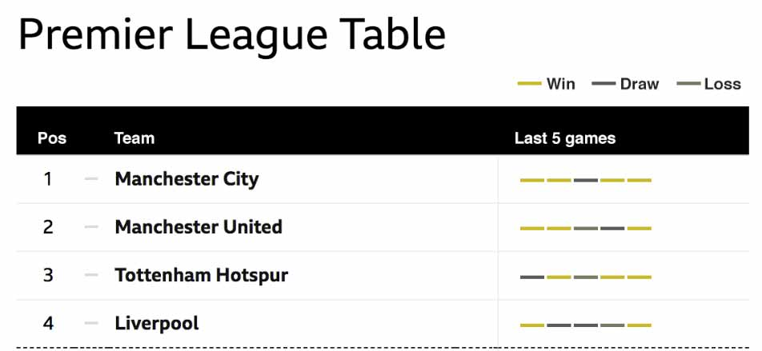

The problem is, if you're colour blind the information is really hard to understand.
Each game is shown as a coloured rectangle. It is varying shades of grey and yellow so you can't work out what is a win, loss or draw.
End of slide. Go to next slide